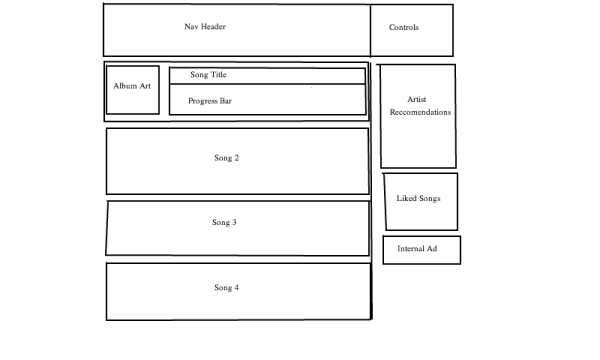
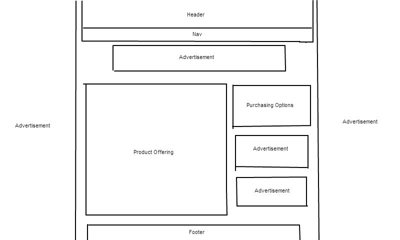
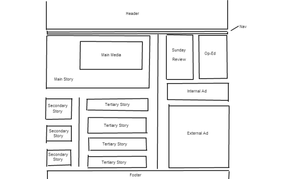

Sound Cloud
Sound Cloud is a platform for people to share and discover music. 10 years ago, most people listened to music on the radio or from their own personal collections, painstakingly purcased 12 songs at a time or downloaded through virus-ridden platforms like Limewire and Kazaa. The cost of recording provided a barrier to entry for many aspiring artists and limited the music available for public use. As the power of personal computing grew and synthesizers rose in popularity, music evolved to a point where anyone with a Macbook and a little bit of determinatin could produce a song. But how do these aspiring artists connect with people around the world that might be interested in hearing their beats? Enter sound cloud.
The main visual challenge facing Sound Cloud is just how to represent and display songs. Most people think of songs as something you hear (not see), but in order to interact with them (comment, navigate through, etc) these songs need a user interface. Soundcloud solved this by focusing on the song's progress bar, adjusting it's height to represnt various elements of the song. They created individual song pags where they could extend the progress bar to the width of the screen so users can accurately place comments at any second they want. With these elements, Sound Cloud created a UI that was fun and intuitive to use, driving over 40 million registered users to the site.
Whiskey Militia
Whiskey Militia is a great example of a true e-commerce site, offering nothing to users but the current deal-of-the-day and whatever might be listed in their 'private stash' section. Furthermore, they offer soft and hard goods at ridiculously low prices (lower than other websites, seriously). This drives users to visit whiskeymilitia.com only when they are ready to buy, keeping 'window shopping' at a minum and driving sales up up up!
Whiskey Militia's main design challenge is that they only sell one item at a time. Considering what other e-commerce sites smash into one browswer-window (thumbnails, navigation, product sorting, recommened items, etc etc), Whiskey is actually faced with the problem of having too little to show on one screen. For better or worse, Whiskey solves this problem with ads - plastering them all over the screen and expecting their veteran users to ignore them while they begrugingly purchase the latest 60% off snowbaord because it's just too good of a deal to pass up (I now have 7).
New York Times
The New York Times is a premier news source, offering hundreds if not thousnads of uinique stories per day through the online version of their 160 year-old paper. The NYT attempts to connect people with events and stories that happen all over the world, offering a great deal of free online content in an attempt to drive up subscription services. The main design problem for their home page is the massive amount of text that they need to fit onto one page. In order represent of all their top stories in the space of just one browser width, nytimes.com has to omit pictures and stick to just headlines/synopses. While this could cause the page to look bland, The New York Times does a good job of using white space to separate stories. This spacing keeps keeps stories from flowing into eachother and makes their website resemble the front page of a traditional paper - a familiar site for most readers.